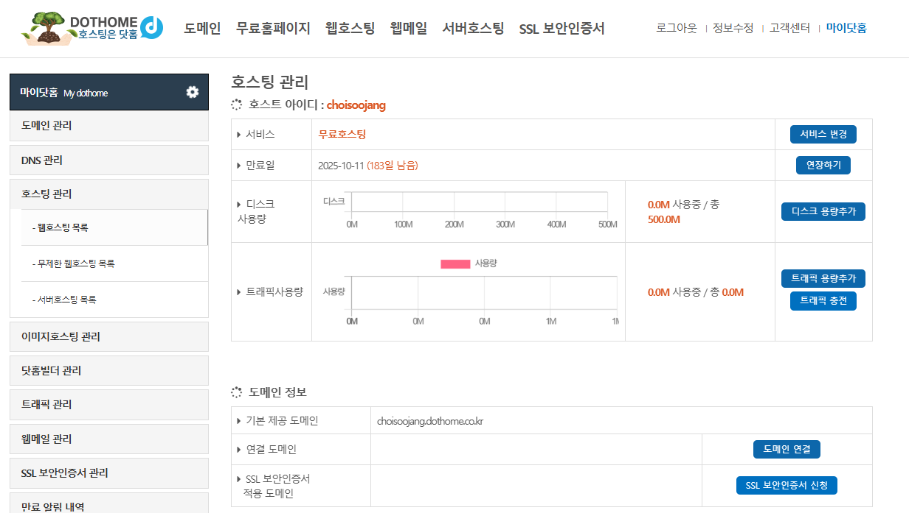
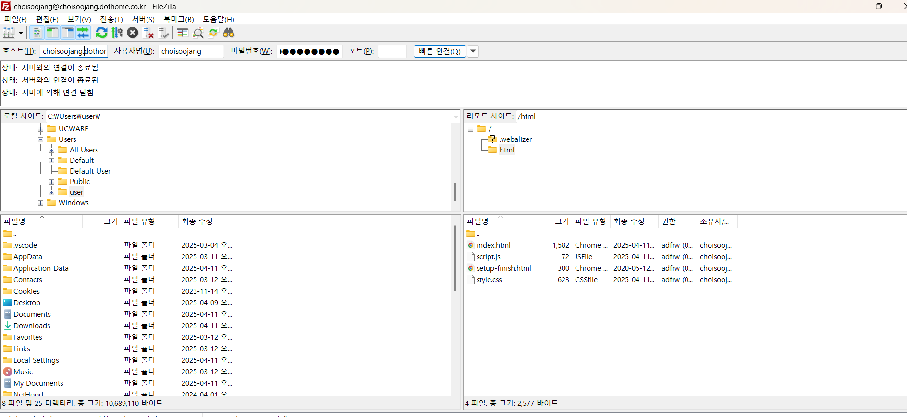

변경 테스트
배포란 무엇?
- 소프트웨어를 서버에 올리는 것
- 개발자가 웹 사이트 코드를 서버에 업로드하거나 업데이트하는 것
- 배포를 통해 사람들이 웹 사이트를 실제로 실행하고 사용할 수 있음
2. 준비물
- 웹사이트 파일 (HTML, CSS, JS)
- 웹 호스팅 서비스 (예: 마이닷홈) - 서버를 고객에게 제공함
- FTP(File Transfer Protocol) 접속 정보
- FTP 프로그램 (예: FileZilla) - 인터넷을 통해 파일을 서버로 전송하는 프로토콜(약속, 규약)
3. 간략한 배포 순서
- 웹 호스팅 서비스 가입 및 FTP 정보 확인
- FileZilla 설치 및 실행
- FTP 접속 정보 입력 후 서버 접속
- 웹사이트 파일을 서버에 업로드
- 웹 브라우저에서 사이트 확인
3-1. 웹 호스팅 서비스 가입 & 설정
- 마이홈닷홈(www.dothome.co.kr)가입
- 무료 웹호스팅 신청 -> FTP 정보를 제공받는 역할
- 호스트: ftp.dothome.co.kr
- 아이디 / 비밀번호: 가입 시 등록한 계정
- 포트: 기본 21 (SFTP는 보통 22) 
3-2. FTP 클라이언트 설치 및 접속
- FileZilla 공식 사이트에서 설치
- https://www.filezilla.kr/
- 상단 입력창에 접속 정보 입력:
- 호스트: ftp.내사이트주소.com
- 사용자명: 아이디
- 비밀번호: 비밀번호
- 포트: 21 (또는 SFTP면 22)
- "빠른 연결" 클릭 
3-3. 웹 사이트 파일 업로드
- 왼쪽: 내 컴퓨터
- 오른쪽: 웹 서버
- /html, /www, /public_html 같은 폴더를 찾아서 거기에 HTML/CSS/JS 파일을 드래그 앤 드롭해서 올리기
3-4. 브라우저에서 접속 확인
- 웹사이트 주소 접속해 보기
- 예: http://아이디.dothome.co.kr 제대로 나오면 배포 성공!
- /html, /www, /public_html 같은 폴더를 찾아서 거기에 HTML/CSS/JS 파일을 드래그 앤 드롭해서 올리기
4. 주의할 점
- 파일 이름에 한글이나 공백 사용 금지
index.html파일이 반드시 있어야 함- 기존 파일 덮어쓰지 않도록 백업 권장
💡 JavaScript 확인
아래 버튼을 눌러 콘솔 메시지를 확인해보세요.